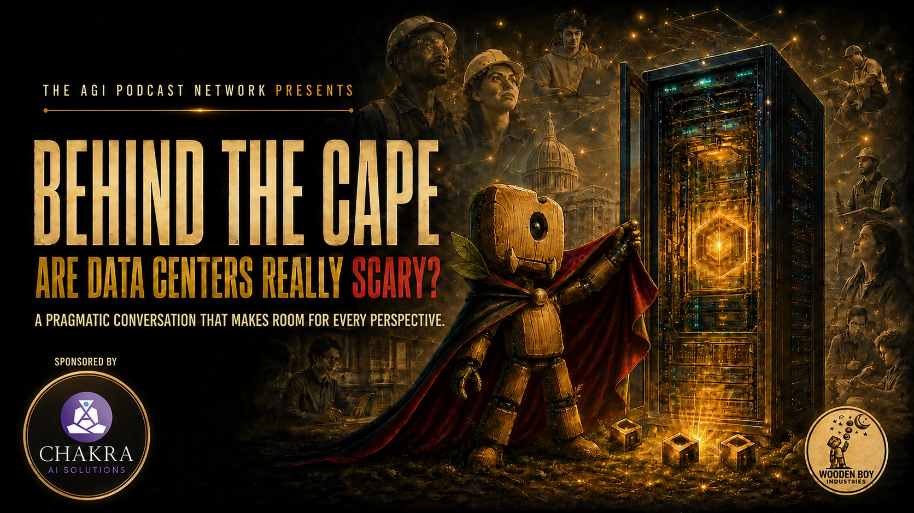
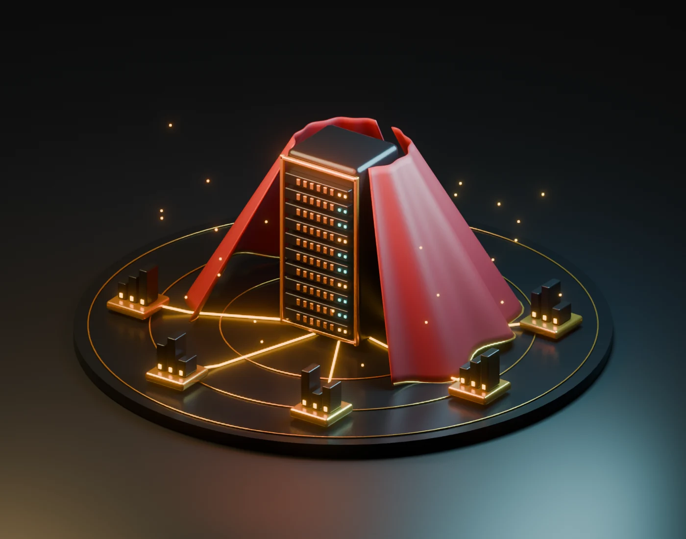

PURDUE UNIVERSITY
Roberto Gallardo, Ph.D.
Vice President for Engagement
Works with communities on economic development, digital inclusion, and the regional implications of technology.
Professional profileAre data centers
really scary?
A pragmatic conversation that makes room for every perspective.
Register on LinkedIn
Electricity. Water. Work. The neighborhood down the road. What should a community ask when a data center enters the conversation?

ONE SYSTEM. MANY PERSPECTIVES.CHOOSE A THREAD TO EXPLORE
What would a fair agreement look like for residents, utilities, and the companies building the infrastructure?
A QUESTION TO BRINGWhat evidence would help us understand the local tradeoffs?
An illustrative 3D scene, created in Blender for this conversation. The connections are conceptual, not measured impacts.
Who benefits?
Who carries the costs?
What would change your mind?
Hear different perspectives, examine the tradeoffs, and bring your questions into the room.
Vice President for Engagement
Works with communities on economic development, digital inclusion, and the regional implications of technology.
Professional profileLynton K. Caldwell Professor
Founding co-director, Energy Justice Lab
Studies environmental and energy policy, public attitudes, and the equity dimensions of the energy transition.
Professional profileCommunity + Workforce Development Manager
Brings Google’s community and workforce-development perspective to the conversation.
Professional profileYOUR CO-FACILITATORS
Host, AGI Podcast Network
Brief panelist perspectives to put different experiences and questions on the table.
A moderated conversation about the choices communities face and the information they need.
Selected questions from the live audience. A LinkedIn replay will be available afterward.
Bring your curiosity. Your concerns. Your perspective.
Register on LinkedIn Add to calendar